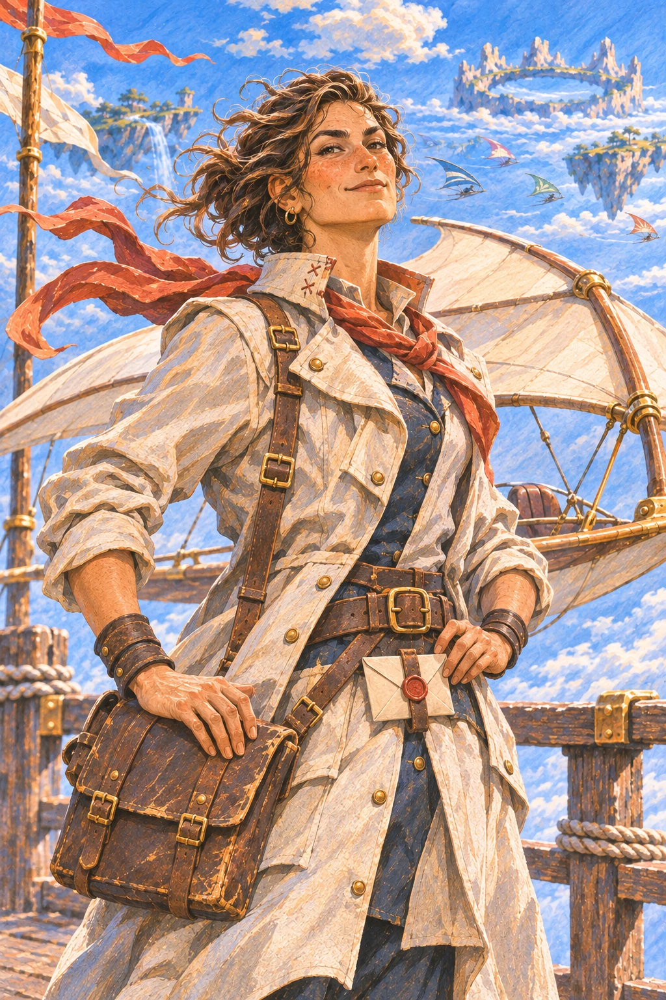
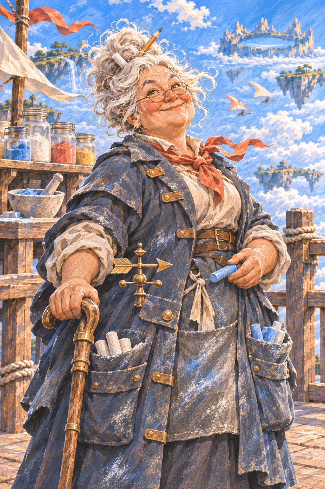

Пройти финал гонки преследования отрезок за отрезком и у верхних ворот решить: повернуть к Нери и заплатить минутами или идти за первым местом.
Тобель ИстВеста Рон

Дария ВаррНери АйренГедда АйренНаим Рош

Фея ЛаннОрин КельмГальт РудойТиса ХорнСельва ПримСарош Ведь
Восемь планеров стоят на одной линии — впервые со дня Порта Гелий. На каменной арке Кольца Короны висит колокол, под ним Веста дописывает мелом порядок старта: у кого какое отставание, не больше четверти часа. Мел скрипит, и вся площадка слушает этот скрип. На кормах восемь белых лент, свёрнутых в кулак. Тобель Ист открывает лаковый футляр и надевает парадные перчатки с медной пуговицей.
Подготовка и роли
Порядок: перчатка, две вещи и ленты — не больше 15 минут, затем гонка по отрезкам, последние две-три минуты — «Записано», имя страницы и две реплики. Перчатка — не суд и не разбор: две реплики Тобеля, Веста сразу берёт колокол, Тобель уходит. Ленты решают только спорную строку; лент не зачитывать списком. Заведите часы гонки: старт каждого = его отставание (не больше 14). После каждого отрезка прибавляйте время и вслух читайте три ближайшие строки. Нери срывается всегда, в начале отрезка 2; поток тащит её к воротам, через которые идёт «Стриж». Обязательной смерти нет: ветер, трос, время, не травма. В момент срыва скажите честно: цена N (база 14, −2 страховка, −2 площадка, не меньше 10), промахи до N+4; впереди после буксира больше чем на 4 — первое место ваше, на 1–4 — Дария идёт верхом открытым броском (d20+5 против СЛ 14), вровень или позади — второй исход. Ничья после поворота — сопернику; эскиз повернувшим не помогает. Ориентир: с обеими скидками (цена 10) запас после буксира бывает до 8 — можно спасти и победить; холодный экипаж, который подводил Нери, скидок не получает (цена 14): запас не больше 4 — в лучшем случае бросок Дарии. Разоблачение Тобеля — последствие, не исход.
Альта объявляет решения экипажа у колокола и у верхних ворот; решают пары.
Рута и Альта ловят трос и держат буксир.
Брин и Лис ведут часы гонки, читают три дуги и считают порог.
Искра называет у колокола до двух вещей — по фразе на каждую.
Яра рядом с Геддой и Нери, не решая за них.
Сев и Мея (если они за столом) ведут сигналы ракетой и протокол лент.
Сцена 1 · 80 минут
Перчатка у колокола
Тобель берётся за верёвку колокола правой рукой в парадной перчатке — и солнце высвечивает вдоль кончиков пальцев лазурные полосы с зелёной искрой, будто он держал палочку мела. Дайте столу три секунды тишины. Если игроки молчат, Фея говорит первой, как на уроке: «Знаковый мел? На ваших пальцах? Во время гонки?» Орин, не поднимая глаз от узла: «Синего с искрой на моих руках нет, соседи. На чьих есть — смотрите сами.» Тобель не прячет руку: «Это… я проверял знаки. По долгу.» Веста уже рядом и забирает у него верёвку: «Знаки опечатаны с первого колокола. Сегодня колокол мой.» Тобель отступает от арки и уходит с площадки; никто его не держит. Если обломок с развилки у Феи, она кладёт его на камень у колокола: «Ученица принесла. Северный.» Веста поворачивается к капитанам: «Правило девять. Спорная строка — лентами.» Один герой может назвать вслух до двух вещей, которые есть у экипажа, — по одной фразе на каждую. Потом Веста: «Ленты!» — и поднимается столько, сколько поднимется. Четыре и больше — Веста при всех переписывает доску по спорной строке. Меньше — строка остаётся мелом под доской. Колокол. Лидер уходит первым, остальные — по своим минутам. Нери, отдавая трос: «Если я пойду верхом, я пойду верхом. Не держите за меня страховку.» Отрезок 1, «Первый разрыв»: три дуги, двадцать минут нормы. Пока ведущий исполнитель держит линию, у пар свои эпизоды.
Выборы
Назвать перчатку самим: знаковый мел опечатан с первого колокола, а полосы — на пальцах судьи.
Назвать у колокола до двух вещей, по фразе на каждую; каждая может поднять ленту одного капитана.
Поднять ленту «Стрижа» — решает экипаж голосом пар.
Отрезок 1: верхняя дуга (−4 / +3), средняя (0) или нижняя (+2).
Эпизод «ветер» (отрезок 1): лента у первого разрыва рвётся раньше, чем вчера, — Мудрость (Восприятие) СЛ 12: верхняя дуга с преимуществом.
Эпизод «соседи» (отрезок 1): окликнуть Дарию — пойдёт средней; спросить Наима — пойдёт нижней и будет у черты первым из тех, кто не борется за место.
Проверка и путь без броска
Перчатка (sparkling-glove) видна всем, без броска; колокол Веста берёт при любом числе лент. Ленты не зачитывайте списком: заработанные поступками (свои минуты в строке; помощь Нери, Наиму, Сарошу, Гальту, Сельве, Тисе; обещания обхода; Дария — если читала расчёт) поднимаются по слову «Ленты!». Названная вещь поднимает одного капитана, который ещё не поднял: листы — Гальт; искра или слово Орина — Сарош; обломок — Сельва; страница журнала — Тиса; песок под печатью — Наим; расчёт — Дария прочтёт и поднимет. Подведённый капитан не поднимет ни за вещь, ни по просьбе. Четыре и больше: строка исполняется по листу ведущего (вечер 1); если сделку на вечере 7 приняли, в строке есть и поправка ветра Весты: героям +3. Отрезок 1: верхняя Ловкость (Акробатика) СЛ 14 −4/+3; средняя 0; нижняя +2. Нери верхняя −4, Дария средняя, остальные 20. Заведите часы гонки: отставание на старте + отрезок 1.
Если не получилось
Если герои ничего не назвали, Фея и Орин всё равно говорят вслух, а ленты поднимаются только за поступки. Меньше четырёх лент: колокол всё равно у Весты, строка записана, но не исполняется. Если с Весты сняли страх за колокола, она добавит, берясь за верёвку: «И в этот раз я знаю, что звоню правильно.» Провал на верхней дуге: +3, но «Стриж» выходит к верхним воротам вместе со всеми.
Сцена 2 · 90 минут
Киноварь в потоке
Отрезок 2, «Верхние ворота». Лента у ворот рвётся вбок — раз, второй — и порыв справа срывает стаксель «Киновари». Красный парус падает в поток у внутренней стены. Этот поток — петля: всё сорвавшееся он тащит назад к верхним воротам, и в эту минуту через них проходит «Стриж», впереди вы шли или позади. «Кречет» и остальные ниже, за каменным зубом обода. Нери висит на страховке. Гедда с площадки смотрителя: «Трос!.. О камень трётся. Лодке — двадцать минут.» Нери считает вслух: «Раз… два… Рамка не считает падение.» Ведущий останавливает стол, читает часы гонки и говорит честно: «Поворот стоит N, с промахами до N+4. Если после буксира вы впереди больше чем на четыре минуты — первое место ваше. На одну-четыре — Дария рискнёт верхом, это открытый бросок.» Тридцать секунд каждой паре на одно слово; решает большинство. Повернули: «Стриж» ложится на крыло, такелажник ловит трос, рулевой подводит борт. Нери сквозь зубы: «Только трос. Давай.» Со второй страховкой она висит на двух точках и снимается быстро. Не повернули: красный парус уходит под киль. Отрезок 3, «Нижняя площадка». У черты стоит Наим; когда подходит Нери, он переворачивает песочные часы: «Я видел её корму впереди. А потом увидел её нос — она шла ко мне.» Последние две-три минуты вечера: Веста пишет мелом «Записано», победитель называет страницу Атласа — если это вы, называете вы, — и звучат по одной реплике Дарии и Нери, по исходу.
Выборы
Повернуть к Нери и заплатить цену поворота — решает экипаж голосом пар.
Не поворачивать: пройти отрезки 2–3 по меню, Нери снимет лодка Весты.
Повернув, тащить «Киноварь» к площадке Гедды (если знаете о ней) или к полке средней дуги.
Отрезок 3: не повернувшим — верхняя, средняя или нижняя (−3 с эскизом); повернувшим — только средняя.
Эпизод «снасти» (отрезок 3): после буксира или рывка ворот шкот разлохмачен — Сила (Атлетика) СЛ 12; провал — ошибка снастей, +3.
Эпизод «соседи» (отрезок 3): следить за Дарией — Мудрость (Проницательность) СЛ 12 угадать, пойдёт ли она верхом, до её броска.
Назвать страницу Атласа, если первыми пришли вы: экипаж договаривается за минуту.
Проверка и путь без броска
Часы гонки: каждому — отставание на старте + время отрезков. Отрыв — разница «Стрижа» с ближайшим соперником (Нери не в счёт). Цена поворота: 14; −2 за вторую страховку на «Киновари»; −2, если герои знают площадку Гедды; не меньше 10. Буксир: Сила (Атлетика) СЛ 14 — трос, Ловкость (Акробатика) СЛ 13 — борт; каждый промах +2; без броска — штатные карабины, +2. Спасение удаётся всегда. Повернувшим: отрезок 2 = 20 + цена, отрезок 3 — средняя, 20; эскиз им не помогает. Не повернувшим: отрезок 2 верх −4/+3 (СЛ 16), средняя 0; отрезок 3 верх −4/+3 (СЛ 14), средняя 0, нижняя +2 (−3 с эскизом). Дария идёт средней; верхнюю на отрезке 3 она берёт, только если после отрезка 2 отстаёт от лидера на 1–4 минуты: открытый бросок d20+5 против СЛ 14, −4/+3. Остальные по 20. Первым приходит меньший результат часов гонки; ничья после поворота — сопернику.
Если не получилось
Промахи не отменяют спасения, только прибавляют +2 — и запас может уйти из рук. Не повернули: Нери висит на страховке, пока лодка Весты не снимет её: жива, вымотана, «Киноварь» потеряна в облаках, сезон окончен. Нери берёт трос всегда — со словами, но берёт. Развязка — две-три минуты: «Записано», имя страницы, две реплики. Не спрашивайте каждого героя о его чувствах и не разыгрывайте суд над Тобелем.
Искра на перчатке
Парадная белая перчатка с медной пуговицей на правой руке Тобеля, сжимающей верёвку колокола; вдоль кончиков пальцев — лазурные полосы с зелёной искрой, будто он держал палочку мела.
Что можно установить
Тобель держал палочку знакового мела во время гонки: слюда въелась в кожу и не отчищается. Знаков во время гонки не правит никто, мел опечатан; полосы на пальцах судьи значат, что печать нарушена его рукой.
Получение
Увидеть искру у колокола перед стартом финала: она видна всем, бросок не нужен.
Запасной путь
Если герои не связали, Фея и Орин у колокола вслух спрашивают: «Знаковый мел? На ваших пальцах? Во время гонки?»
Лента верхних ворот
Длинная пробная лента у верхних ворот Короны рвётся вбок рывками.
Что можно установить
Боковой порыв бьёт справа после второго рывка ленты. Лёгкий планер без второй страховки на резком входе может сорвать в поток вдоль внутренней стены. Заранее увиденное предупреждение и запас страховки уменьшают риск.
Получение
На разведке участка 7 считать рывки ленты и сопоставить их с порывом справа.
Запасной путь
Гедда объясняет порыв любому, кто спросит о верхних воротах.
Нос, а не корма
Наим переворачивает песочные часы на шнурке каждый раз, когда начинает говорить о старом; на обороте его путевой карточки нарисованы два планера и поперечный поток.
Что можно установить
Гедда шла первой, вернулась к застрявшему экипажу Наима и вывела его. Снасти потом не выдержали, и она сошла. Протокол хранит лишь слова «отказ от продолжения»; выбор, который за ними стоит, в таблицу не попал.
Получение
Спросить Наима о старом финале или о вымпеле. Рассказывает он сам, бросок не нужен.
Запасной путь
Наим повторит это вслух на площадке у Кольца Короны на последнем вечере, если рядом стоит Нери. Гедда ответит на прямой вопрос.
Изменения после решений
Если У колокола поднято четыре белые ленты и больше → Спорная строка исполнена до старта. После финиша Веста открывает портфель Тобеля: резерва нет, приз не выплатят, пока растрата не возвращена; песок, журнал и листы она везёт в коллегию.
Если Лент меньше четырёх → Строка не исполнена, но Тобель ушёл с площадки, и касса всё равно откроется: если победил не «Кречет», платить нечем; если «Кречет», а Дария читала расчёт, она при всех отказывается от зачёта.
Если Герои повернули к Нери и по часам гонки всё равно пришли первыми («Две ленты у ворот») → Страницу Атласа называют игроки. Дария: «Вы обогнали меня с человеком на буксире. Условие выполнено. Завтрак за мной.» Нери: «Последняя. Со временем, не с „отказом“. Считается.»
Если Герои повернули, а запаса не хватило или Дария выиграла бросок («Красная лента в руке») → Страницу называет победитель; Дария: «Пусть будет „Чистый счёт“. Это не название — это условие.» Потом: «Первая. По часам, без покупки. Спасибо не скажу — вы бы обиделись.» Нери: «Вы проиграли не из-за меня — сами повернули. Я запомню разницу.»
Если Герои не повернули («Белая лента победителя») → Страницу называет первый у черты. Дария: «Чисто. Ни одной запятой против вас. Не знаю, хотела бы я так выиграть.» Нери из лодки Весты: «Двадцать минут на тросе. Я считала.» Гедда молча подаёт ей руку.
Завершение вечера
Веста пишет последнюю строку и говорит одно слово: «Записано.»